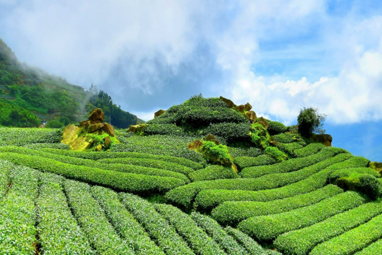
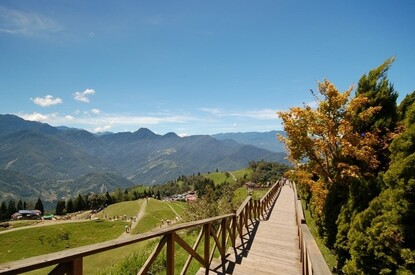
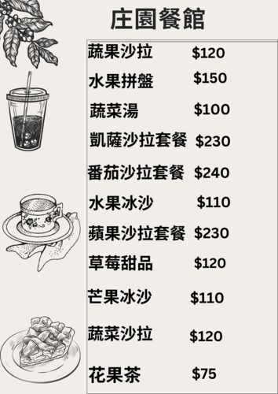

導覽資訊


品茶體驗
我們果園是採用天然有機的種植方法,放棄人為加工的人工有機栽種，讓水果在自然而然的環境中生長。另一方面透過生態教育，向一般大眾傳遞對水果的熱愛。在這裡可以喝到現榨的新鮮果茶，若是夏天的夜晚，還可以看得見點點螢光，絕對讓每一個到此一遊的人不虛此行！也可以在現場直接購買水果伴手禮以及各種水果茶飲。
庄園步道
很適合全家人一同出遊來走這個步道，步道難度適中大人小孩都可以一起健行運動還能沿途欣賞我們莊園的景色，也可以順便到我們果園裡走走，特定的季節水果採收還能親自採摘。
